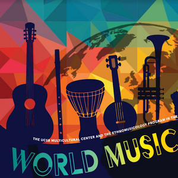

Welcome to the World of Music!
 Explore the diversity of global music genres. Dive deep into Highlife, Afro-beats, and Emo music to learn about their origins, evolution, and key artists. Music is a universal language that bridges cultures, and every genre has its unique story to tell.
Genres
Why Explore Music?
Music has the power to connect people across cultures and geographies.
It is a reflection of identity and a tool for storytelling.
Every genre has its unique rhythm, emotion, and history to offer.